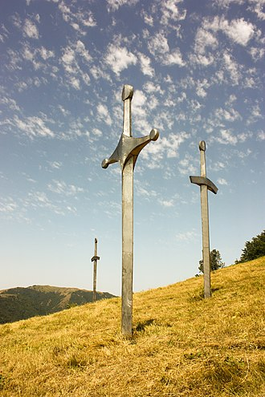

The Battle of Didgori (Georgian: დიდგორის ბრძოლა, romanized: didgoris brdzola) was fought between the armies of the Kingdom of Georgia and the Seljuk Empire at the narrow place of Didgori, 40 km west of Tbilisi, on August 12, 1121. The large Muslim army, under the command of Ilghazi, was unable to maneuver and suffered a devastating defeat due to King David IV of Georgia's effective military tactics. The battle at Didgori was the culmination of the entire Georgian–Seljuk wars and led to the Georgians' reconquest of Tbilisi in 1122. Soon after that David moved the capital from Kutaisi to Tbilisi. The victory at Didgori inaugurated the medieval Georgian Golden Age and is celebrated in The Georgian Chronicles as a (Georgian: ძლევაჲ საკვირველი dzlevay sak'virveli lit. the "miraculous victory"). Modern Georgians continue to remember the event as an annual August 12 festival known as Didgoroba ("[the day] of Didgori").[22][23]
